Introdução
Informações Gerais
- Projeto: Gestão de estoque de bares e restaurantes
- Repositório GitHub: Template Trabalho Interdisciplinar
- Membros da equipe:
Contexto
Detalhes sobre o espaço de problema, justificativas e os objetivos do projeto.
Problema
A confusão na gestão de estoques é um problema que afeta, de forma negativa, o desempenho do
lugar e seus gastos/lucros. A falta de clareza sobre o que há e o que não há, resulta em vários
problemas, por exemplo:
-Excesso de Estoque: acúmulo excessivo de produtos, causando altos custos de armazenamento e
desperdício de dinheiro.
- Escassez de Estoque: perda de vendas, insatisfação por parte dos clientes e, consequentemente,
afeta negativamente a imagem do lugar.
- Ineficiência Operacional: dificuldade de localizar itens, demora na contagem de itens ou até mesmo
registrá-los erroneamente, equilíbrio do fornecimento de produtos de acordo com a demanda.
- Impacto Financeiro: lucratividade.
- Prazos Demorados: atrasos, afetando a confiança do cliente no lugar.
- Falta de Visibilidade: dificuldade da tomada de decisões de compras, produção e distribuição,
principalmente em situações de emergência.
- Desperdício: tempo, mão de obra, espaço para armazenar os outros produtos, alimentos (aqueles
perecíveis que estragam antes mesmo de serem usados.
- Inconsistência no Cardápio: falta de ingredientes essenciais, levando ao lugar a alteração de seus
cardápios ou até mesmo a recusa de clientes.
Objetivos
Os principais objetivos do projeto(site) é fazer com que os estoque fiquem mais organizados, facilitando o seu manejo. Além de oferecer informações que podem auxiliar os donos de comercios a entenderem melhor sua operação interna. Assim melhorando seus serviços como um todo.
Justificativa
A confusão na gestão de estoques é um desafio grande que prejudica a eficiência operacional e competitividade de um lugar, portanto, é importante a implementação de sistemas de controle adequados para minimizar esses problemas e melhorar o desempenho
Público-alvo
Nesse contexto, os donos de bares e restaurantes representam um público-alvo particularmente relevante. A boa administração de seus estabelecimentos depende diretamente de uma boa organização.
Concepção (Design Thinking)
Detalhes do processo de discovery do projeto.
Apresente o processo de discovery do projeto. Com foco na experiência do usuário, esse processo abrange a compreensão do contexto do problema e das características do usuário, a definição do problema, a geração de ideias, a prototipagem e a elaboração de uma proposta de solução
Processo de Design Thinking
O arquivo que se segue apresenta o resultado desse processo.
Apresente o processo de Design Thinking realizado pelo grupo e documentado por meio do software Miro. No documento apresentado, devem ser incluídos: (1) a matriz CSD, (2) o mapa de stakeholders, (3) as personas, (4) as respectivas propostas de valor e (5) o processo de ideação identificando as ideias levantadas e sua priorização.
Especificações do Projeto
Documentação das especificações do projeto.
Apresente as especificações do projeto, incluindo as histórias de usuário e os requisitos funcionais e não funcionais.
Histórias de Usuários
Com base na análise das personas foram identificadas as seguintes histórias de usuários:
Apresente aqui as histórias de usuário que são relevantes para o projeto de sua solução. As Histórias de Usuário consistem em uma ferramenta poderosa para a compreensão e elicitação dos requisitos funcionais e não funcionais da sua aplicação. Se possível, agrupe as histórias de usuário por contexto, para facilitar consultas recorrentes à essa parte do documento.
EU COMO...PERSONA |
QUERO/PRECISO...FUNCIONALIDADE |
PARA...MOTIVO/VALOR |
|---|---|---|
| Dono do comercio | Diminiur minhas perdas | Aumentar a margem do negócio e melhoras o sistema |
| Operador de estoque(funcionário) | Facilitar o trabalho quadando quando for retirar ou repor o estoque | Organizar e otimizar minhas retiradas/entrads no estoque |
Requisitos
As tabelas que se seguem apresentam os requisitos funcionais e não funcionais que detalham o escopo do projeto.
Com base nas Histórias de Usuário, enumere os requisitos da sua solução. Classifique esses requisitos em dois grupos:
- Requisitos Funcionais (RF): correspondem a uma funcionalidade que deve estar presente na plataforma (ex: cadastro de usuário).
- Requisitos Não Funcionais (RNF): correspondem a uma característica técnica, seja de usabilidade, desempenho, confiabilidade, segurança ou outro (ex: suporte a dispositivos iOS e Android).
Lembre-se que cada requisito deve corresponder à uma e somente uma característica alvo da sua solução. Além disso, certifique-se de que todos os aspectos capturados nas Histórias de Usuário foram cobertos.
Requisitos Funcionais
| ID | Descrição do Requisito | Prioridade |
|---|---|---|
| RF-001 | O sistema irá mostrar os produtos já cadastrados e a possibilidade de editá-los | ALTA |
| RF-002 | Mostrar gráficos de saída de cada categoria de produto | MÉDIA |
| RF-003 | Cada produto estar dividido pelo lote/validade | MÉDIA |
| RF-004 | Relatório de entrada e saída selecionado por mês, período desajado | ALTA |
| RF-005 | Ambiente de login -> Dono e Funcionário | ALTA |
Requisitos Não-Funcionais
| ID | Descrição do Requisito | Prioridade |
|---|---|---|
| RNF-001 | As atualizações e os computação dos requerimentos(entrada e saída de produtos) não devem demorar. | ALTA |
| RNF-002 | Usuário do Dono com amplo acesso | ALTA |
Projeto de Interface
Artefatos relacionados com a interface e a interacão do usuário na proposta de solução.
Apresente a ideia de interface que está sendo prevista para o projeto. Inclua os wireframes, o user/screen flow e o protótipo interativo.
User/Screen Flow e Protótipo interativo
Artefatos relacionados com a interface e a interacão do usuário na solução proposta.
O fluxo de usuário (User Flow) é uma técnica que permite ao desenvolvedor mapear todo fluxo de
telas do site ou app. Essa técnica funciona para alinhar os caminhos e as possíveis ações que o
usuário pode fazer junto com os membros de sua equipe. 
Um protótipo interativo apresenta o projeto de interfaces e permite ao usuário navegar pelas
funcionalidades como se estivesse lidando com o software pronto. Veja o exemplo a seguir.
LINK Marvelapp: https://marvelapp.com/prototype/a0dg2g6/screen/92758573?sign_up_origin=player
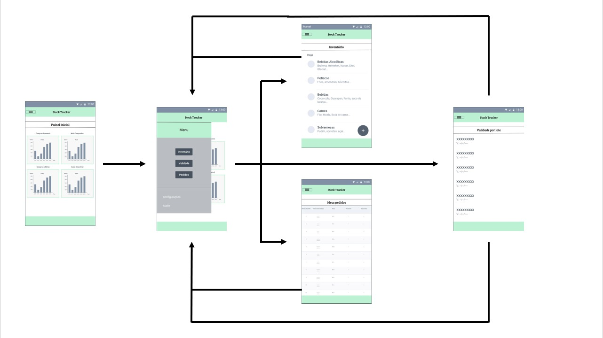Wireframes
Protótipo de telas do sistema em baixa fidelidade (rascunhos).
Os Wireframes são protótipos das telas da aplicação usados em design de interface para sugerir a
estrutura de um site web e seu relacionamentos entre suas páginas. Um wireframe web é uma ilustração
semelhante ao layout de elementos fundamentais na interface. 
 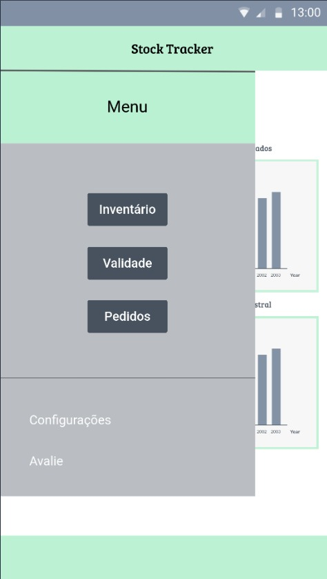
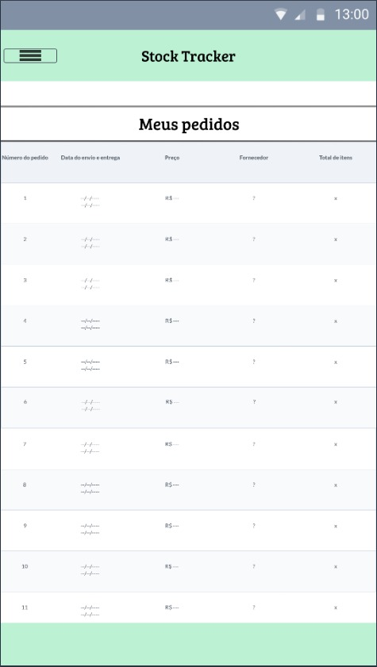
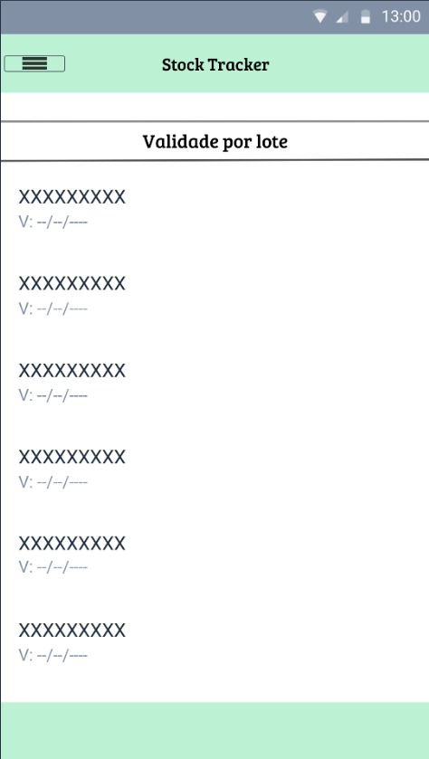
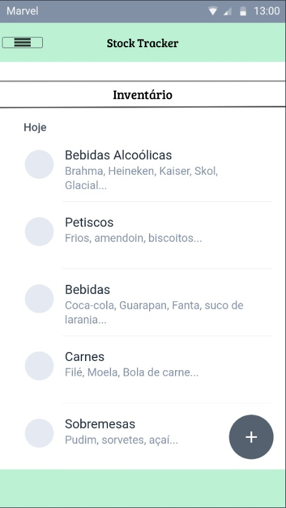
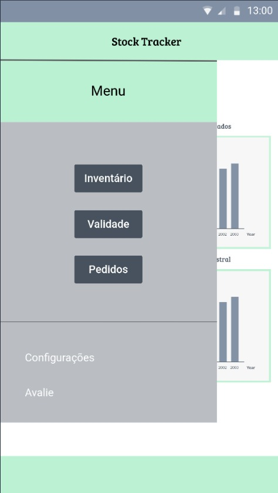
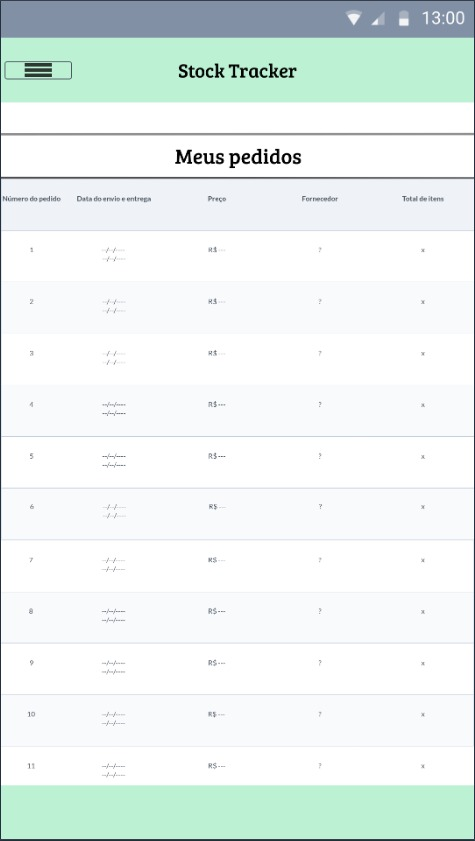
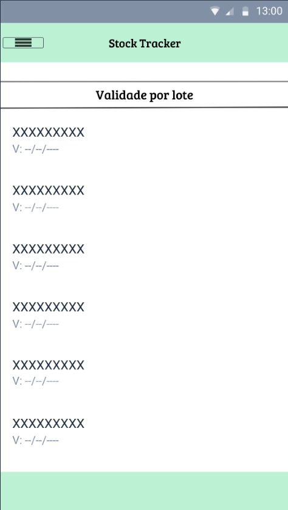
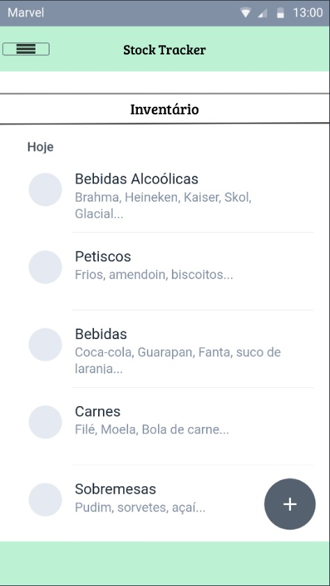
Metodologia
Detalhes sobre a organização do grupo e o ferramental empregado.
Nesta parte do documento, você deve apresentar a metodologia adotada pelo grupo, descrevendo o processo de trabalho baseado nas metodologias ágeis, a divisão de papéis e tarefas, as ferramentas empregadas e como foi realizada agestão de configuração do projeto via GitHub.
Coloque detalhes sobre o processo de Design Thinking e a implementação do Framework Scrum seguido pelo grupo. O grupo poderá fazer uso de ferramentas on-line para acompanhar o andamento do projeto, a execução das tarefas e o status de desenvolvimento da solução.
Ferramentas
Relação de ferramentas empregadas pelo grupo durante o projeto.
Liste as ferramentas empregadas no desenvolvimento do projeto, justificando a escolha delas, sempre que possível. Inclua itens como: (1) Editor de código, ferramentas de comunicação, ferramentas de diagramação, plataformas de hospedagem, entre outras.
| Ambiente | Plataforma | Link de Acesso |
|---|---|---|
| Processo de Design Thinking | Miro | https://miro.com/app/board/uXjVMoGB_vE=/?share_link_id=521780306409 |
| Repositório de código | GitHub | https://github.com/ICEI-PUC-Minas-PMGCC-TI/ti-1-pmg-cc-m-20232-gestao-de-estoque-2 |
| Protótipo Interativo | MavelApp | https://marvelapp.com/prototype/a0dg2g6/screen/92770826 |
Gestão do Projeto
Divisão de papéis no grupo e apresentação da estrutura da ferramenta de controle de tarefas (Kanban).
Apresente a divisão de papéis e tarefas entre os membros do grupo. Informe quem é o Scrum Master, o Product Owner e os desenvolvedores. Informe também quem é o responsável pela documentação do projeto.
Apresente o quadro de gerenciamento do time (Kanban), seu formato e as experiências na utilização dessa ferramenta (GitHub Projects)
Vitor - Scrum master
Gabriel - Equipe de desenvolvimento
Marina e Paulo - Product Owner
Controle de Versão
Estrutura do fluxo de trabalho no ambiente do GitHub.
Discuta como a configuração do projeto foi feita na ferramenta de versionamento (GitHub). Exponha
como a gerência de tags, merges, commits e branchs é realizada. Discuta como a gerência de issues foi
realizada.

Solução
Esta seção apresenta todos os detalhes da solução criada no projeto.
Apresente cada uma das funcionalidades que a aplicação fornece tanto para os usuários quanto aos administradores da solução.
Inclua, para cada funcionalidade, itens como: (1) titulos e descrição da funcionalidade; (2) Estrutura de dados associada; (3) o detalhe sobre as instruções de acesso e uso.
Video do Projeto
O vídeo a seguir traz uma apresentação do problema que a equipe está tratando e a proposta de solução.
O video de apresentação é voltado para que o público externo possa conhecer a solução. O formato é livre, sendo importante que seja apresentado o problema e a solução numa linguagem descomplicada e direta.
Utilize o recurso de compartilhamento via embed e inclua o vídeo logo abaixo.
Funcionalidades
Esta seção apresenta as funcionalidades da solução.
Apresente cada uma das funcionalidades que a aplicação fornece tanto para os usuários quanto aos administradores da solução.
Inclua, para cada funcionalidade, itens como: (1) titulos e descrição da funcionalidade; (2) Estrutura de dados associada; (3) o detalhe sobre as instruções de acesso e uso.
Funcionalidade 1 - Cadastro de Produtos
Permite a inclusão de produtos no sistema
- Estrutura de dados: Produtos
- Instruções de acesso:
- Abra o site
- Acesse no menu principal e clique no "+" no canto superior direito
- Em seguida, cadastre o novo produto
- A seta no canto inferior esquerdo sempre volta a tela anterior
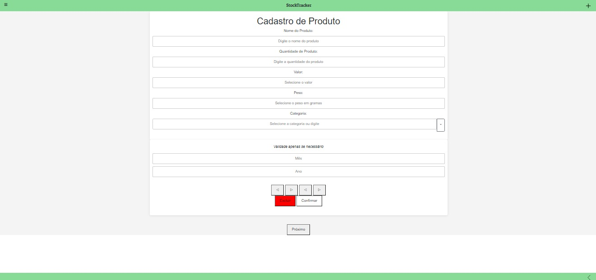
Funcionalidade 2 - Visualização das categoria existentes
Permite a leitura das categorias do sistema
- Estrutura de dados: Contatos
- Instruções de acesso:
- Abra o site
- Acesse o menu principal e clique no canto superior esquerdo em "Inventário"
- A seta no canto inferior esquerdo sempre volta a tela anterior
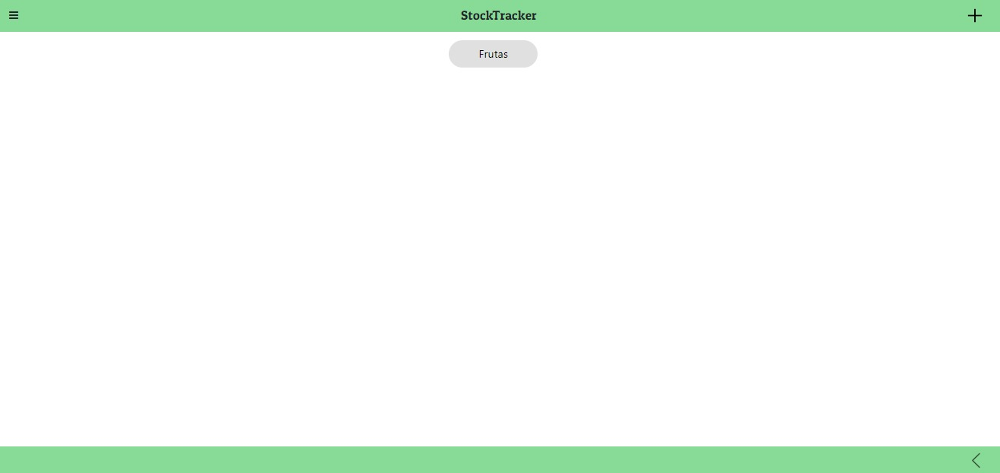
Funcionalidade 3 - Visualização dos produtos
Permite a leitura e exclusão de produtos para o sistema
- Estrutura de dados: Produtos
- Instruções de acesso:
- Abra o site
- Acesse o menu principal e clique no canto superior esquerdo em "Inventário". Depois, selecione a categoria de produtos que deseja.
- Ao clique da lixeira, o produto é excluido. Se for o ultimo produto da categoria, a mesma é excluida tambem.
- A seta no canto inferior esquerdo sempre volta a tela anterior
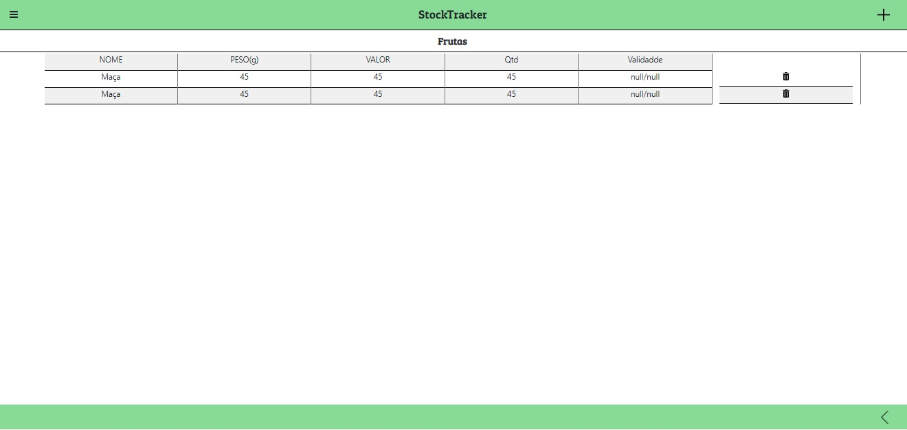
Estruturas de Dados
Descrição das estruturas de dados utilizadas na solução com exemplos no formato JSON.
Apresente as estruturas de dados utilizadas na solução tanto para dados utilizados na essência da aplicação quanto outras estruturas que foram criadas para algum tipo de configuração
Nomeie a estrutura, coloque uma descrição sucinta e apresente um exemplo em formato JSON.
Estrutura de Dados - Produtos
Produtos da aplicação
{
"produtos": [
{
"id": 1,
"nome": "Maça",
"peso": 45,
"valor": 45,
"Qtd": 45,
"ano": null,
"mes": null,
"categoria": "Frutas"
},
{
"id": 2,
"nome": "Pera",
"peso": 4,
"valor": 4,
"Qtd": 4,
"ano": null,
"mes": null,
"categoria": "Frutas"
},
{
"id": 5,
"nome": "Milho",
"peso": 6,
"valor": 457,
"Qtd": 75,
"ano": 2025,
"mes": 2,
"categoria": "Enlatados"
}
],
Estrutura de Categorias
Categorias dos produtos
"categorias": [
{
"cat": "Frutas",
"id": 1
},
{
"cat": "Enlatados",
"id": 2
},
{
"cat": "Doces",
"id": 3
}
]
}
Módulos e APIs
Esta seção apresenta os módulos e APIs utilizados na solução.
Apresente os módulos e APIs utilizados no desenvolvimento da solução. Inclua itens como: (1) Frameworks, bibliotecas, módulos, etc. utilizados no desenvolvimento da solução; (2) APIs utilizadas para acesso a dados, serviços, etc.
Fontes:
- Google Fontes - https://fonts.google.com
Framework:
- Bootstrap - https://getbootstrap.com
Scripts:
- JavaScript - https://www.javascript.com
API:
- JsonServer - https://my-json-server.typicode.com
- JsonServer usado pelo grupo- https://stocktracker--pauloharaujo345.repl.co
- JsonServer usado pelo grupo (Replit) -https://replit.com/@pauloharaujo345/StockTracker
FAQ
Perguntas e respostas comuns associadas ao projeto.
Apresente uma lista de perguntas e respostas comuns associadas ao projeto. Inclua perguntas como: (1) detalhes de acesso e uso do projeto; (2) informações sobre a instalação e configuração da aplicação; (3) questões sobre a manutenção da aplicação; (4) detalhes sobre a integração da aplicação com outros sistemas; (5) questões sobre a segurança da aplicação.
Referências Bibliográficas
Apresente as referências bibliográficas utilizadas no projeto. Inclua itens como: (1) livros, artigos, tutoriais, etc. utilizados no desenvolvimento da solução; (2) links para sites, blogs, etc. utilizados no desenvolvimento da solução.
Analise Sites/Blogs ERPs no mercado, como o Tiny ERP
Referências em Blogs e videos do YouTube, como o do SEBRAE e o Tiny ERP
Ferramenta de contro de estroque do WordPress com o Woocomerce